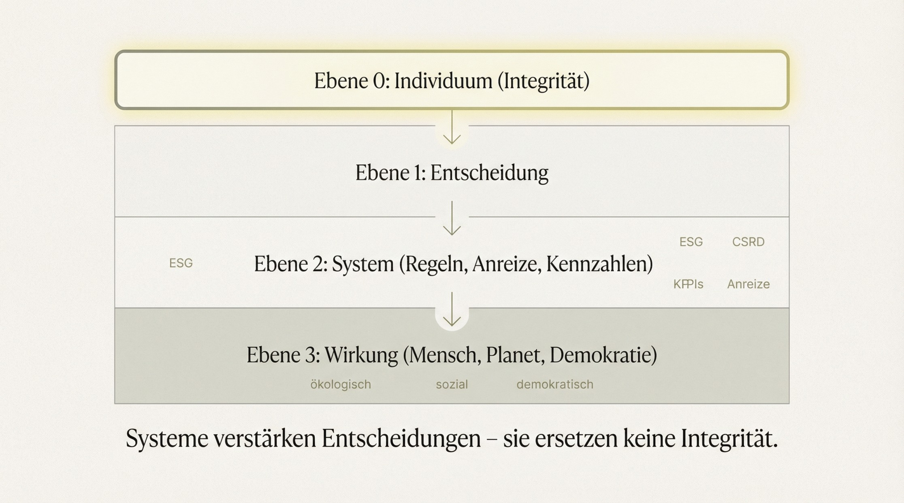

Einleitung
Wir diskutieren gerade viel über Transformation. Über neue Regeln, neue Steuern, neue Systeme.
Und ja - all das ist wichtig.
Aber je länger ich mich mit diesen Fragen beschäftige, desto klarer wird mir: Der entscheidende Hebel liegt meistens nicht dort, wo wir ihn vermuten.
Wir neigen dazu zu glauben, dass sich Probleme durch die richtigen Rahmenbedingungen lösen lassen, wie eine triviale Maschine. Dass bessere Gesetze automatisch zu besseren Ergebnissen führen.
Doch Systeme sind am Ende nur ein Spiegel. Ein Spiegel dessen, wie wir entscheiden, handeln und Verantwortung übernehmen - Oder eben nicht.
Wirkung entsteht nicht vorwiegend durch Gesetze. Sie entsteht durch Entscheidungen - jeden Tag.
Und hier beginnt eine Frage, die wir uns viel zu selten stellen: Was passiert eigentlich vor dem System?

Der Denkfehler
Wir tun häufig so, als könnten wir komplexe Probleme über Systeme lösen. Als bräuchten wir nur die richtigen Gesetze, die richtigen Anreize, die richtigen Kennzahlen - und dann würde sich Verhalten automatisch in die gewünschte Richtung bewegen. Diese Vorstellung ist verständlich. Sie gibt Sicherheit. Sie suggeriert Steuerbarkeit. Aber sie greift zu kurz.
Jedes System - egal wie gut es gemeint ist - wird von Menschen gestaltet. Und Menschen finden Wege, Systeme zu nutzen, anzupassen oder auch zu umgehen.
Das sehen wir heute sehr deutlich: Nachhaltigkeit ist messbar geworden. Transparenz ist gestiegen. Berichtspflichten nehmen zu. Und trotzdem bleibt die Wirkung hinter den Erwartungen zurück.
Warum? Weil Systeme Verhalten beeinflussen können - aber sie können keine Haltung ersetzen.
Oder anders gesagt: Ein System kann Anreize setzen. Aber es entscheidet nicht, wie wir mit diesen Anreizen umgehen.
Hier entsteht die Lücke zwischen dem, was gemessen wird - und dem, was tatsächlich wirkt.
Was wirklich fehlt
Was in vielen Diskussionen fehlt, ist kein weiteres Instrument. Keine zusätzliche Regulierung. Kein neuer Standard. Was fehlt, ist etwas Grundlegenderes: Integrität.
Was meine ich mit Integrität?
Nicht Moral im klassischen Sinne. Und auch nicht Perfektion. Sondern die Fähigkeit, Entscheidungen entlang ihrer tatsächlichen Wirkung zu treffen - auch dann, wenn Systeme andere Anreize setzen.
Integrität bedeutet, dass Verhalten und Wirkung zusammenpassen. Dass wir nicht nur innerhalb von Regeln handeln, sondern im Sinne dessen, was diese Regeln eigentlich erreichen sollen.
In der Praxis stehen wir ständig vor Zielkonflikten:
kurzfristiger Erfolg vs. langfristige Stabilität
Effizienz vs. Verantwortung
Opportunität vs. Konsequenz
Und genau in diesen Momenten zeigt sich, was ein System nicht leisten kann: Es kann uns nicht abnehmen, wie wir entscheiden. Es kann Rahmen setzen. Es kann Verhalten wahrscheinlicher machen. Es kann Transparenz schaffen. Aber es kann keine Integrität erzeugen.
Und damit entsteht ein blinder Fleck: Wir messen immer mehr - aber wir verstehen immer noch zu wenig, warum Dinge tatsächlich passieren. Warum trotz klarer Daten anders gehandelt wird. Warum bekannte Risiken in Kauf genommen werden. Warum Systeme ihre eigene Zielsetzung unterlaufen.
Die Antwort liegt nicht im System selbst. Sondern in dem, was davor liegt.
Warum das gerade in der Wirtschaft sichtbar wird
Gerade in der Wirtschaft lässt sich diese Lücke besonders gut beobachten.
In den letzten Jahren ist enorm viel passiert:
ESG-Ratings strukturieren Investitionsentscheidungen
Die CSRD schafft neue Transparenz über Unternehmen
Lieferketten werden nachvollziehbarer
Nachhaltigkeit ist strategisch angekommen
Daten sind heute in einem Umfang verfügbar, der vor wenigen Jahren noch undenkbar war.
Und trotzdem entsteht ein Paradox: Noch nie war Nachhaltigkeit so präsent - und selten war ihre tatsächliche Wirkung so begrenzt.
Wir sehen Fortschritte. Aber wir sehen auch:
Optimierung entlang von Kennzahlen statt entlang realer Wirkung
Verschiebung von Problemen entlang der Wertschöpfungskette
Maßnahmen, die gut aussehen, aber wenig verändern
Das ist kein individuelles Versagen. Es ist eine systemische Konsequenz.
Denn solange Systeme primär das messen, was sich leicht quantifizieren lässt, entsteht ein natürlicher Fokus auf das Messbare - nicht zwingend auf das Wesentliche. Und selbst dort, wo Wirkung gemessen wird, bleibt eine entscheidende Variable offen: Wie gehen Menschen mit diesen Informationen um?
Nutzen sie sie als Orientierung? Oder als Spielraum? Treffen sie Entscheidungen entlang der intendierten Wirkung? Oder entlang kurzfristiger Vorteile innerhalb des Systems?
Hier zeigt sich: Systeme können Transparenz schaffen. Aber sie entscheiden nicht, was wir daraus machen.
Der Perspektivwechsel
Vielleicht liegt der nächste Entwicklungsschritt nicht darin, noch mehr Regeln zu schaffen. Sondern darin, den Maßstab zu verändern. Die meisten Systeme, die wir heute nutzen, orientieren sich implizit an einer zentralen Größe: Kapital.
Wir messen Erfolg in:
Umsatz
Rendite
Wachstum
Effizienz
Diese Logik hat über lange Zeit gut funktioniert. Sie hat Innovation ermöglicht, Märkte geschaffen und Wohlstand aufgebaut.
Aber sie hat auch eine strukturelle Begrenzung: Sie misst, was sich monetär abbilden lässt - nicht unbedingt, was tatsächlich wirkt. Und genau hier entsteht eine Verschiebung.
Denn in einer zunehmend vernetzten Welt werden die Folgen von Entscheidungen sichtbarer:
ökologische Auswirkungen
soziale Effekte
systemische Risiken
demokratische Stabilität
Diese Dimensionen lassen sich nicht mehr vollständig ausblenden - sie werden messbar, vergleichbar und zunehmend entscheidungsrelevant.
Die Frage ist also nicht mehr nur: Was bringt den höchsten kurzfristigen Ertrag?
Sondern immer stärker: Welche Wirkung entfaltet eine Entscheidung - und zu welchem Preis?
Damit verändert sich auch die Rolle von Systemen. Sie werden nicht mehr nur Instrumente zur Verteilung von Ressourcen, sondern zunehmend Instrumente zur Steuerung von Wirkung.
Nicht als moralischer Anspruch. Sondern als logische Konsequenz aus Transparenz, Datenverfügbarkeit und realen Folgekosten.
An diesem Punkt beginnt eine andere Art von Wirtschaft: Eine, in der nicht mehr nur Kapitalströme zählen - sondern die Wirkung, die sie auslösen.
Wirkung wird damit nicht nur sichtbar - sie wird zur eigentlichen Steuerungsgröße.
Die Rolle des Individuums
Wenn sich der Maßstab verschiebt - von Kapital hin zu Wirkung - dann verändert sich auch eine grundlegende Frage: Wer trägt Verantwortung?
In vielen Diskussionen über Wirtschaft und Politik wird Verantwortung gerne „nach oben“ delegiert:
An Systeme, an Märkte, an Regulierung.
Doch je genauer man hinschaut, desto klarer wird: Jede Entscheidung entsteht letztlich auf individueller Ebene.
In Unternehmen. In Organisationen. In Institutionen. Systeme können den Rahmen setzen. Sie können Transparenz schaffen. Sie können Anreize verändern.
Aber sie treffen keine Entscheidungen. Das tun Menschen.
Hier wird Integrität zu einem entscheidenden Faktor. Nicht als moralischer Anspruch, sondern als funktionale Voraussetzung. Wenn Wirkung zum Maßstab wird, reicht es nicht mehr aus, sich innerhalb von Regeln zu bewegen.
Dann stellt sich eine andere Frage: Handle ich im Sinne der intendierten Wirkung - oder nur im Sinne des Systems?
Diese Unterscheidung ist zentral. Sie entscheidet darüber, ob Systeme das verstärken, was sie eigentlich erreichen sollen - oder ob sie zu reinen Optimierungsräumen werden.
Integrität ist in diesem Sinne kein „weiches“ Thema. Sie ist die Voraussetzung dafür, dass Steuerung überhaupt funktioniert.
Abschluss
Vielleicht ist das die unbequemste Erkenntnis: Dass wir uns nicht hinter Systemen verstecken können.
Und gleichzeitig die hoffnungsvollste. Denn genau dort liegt die größte Hebelwirkung.
Nicht im nächsten Gesetz. Nicht in der nächsten Kennzahl. Sondern in der Art, wie wir entscheiden.
Echte Veränderung beginnt nicht im Steuerrecht - sondern bei der Integrität des Menschen.